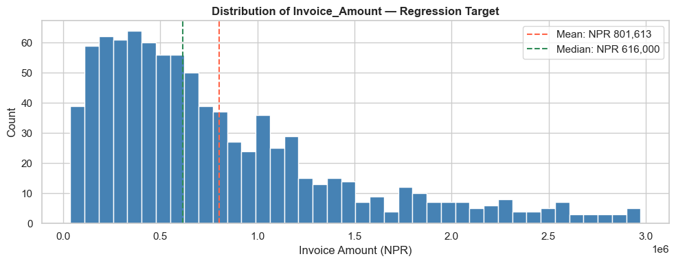
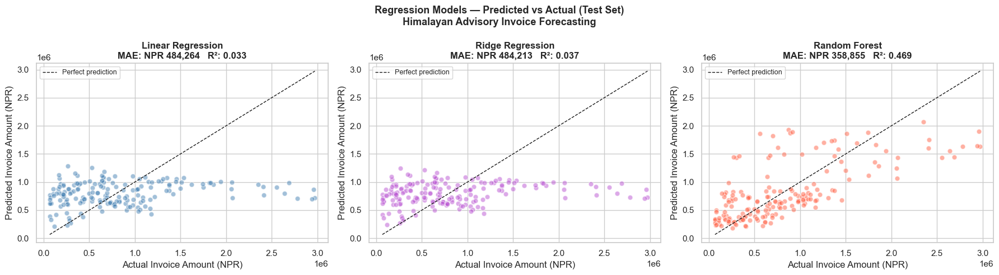
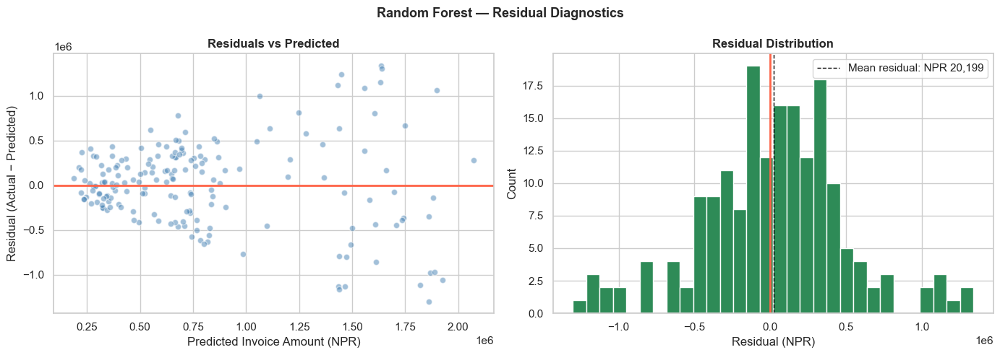
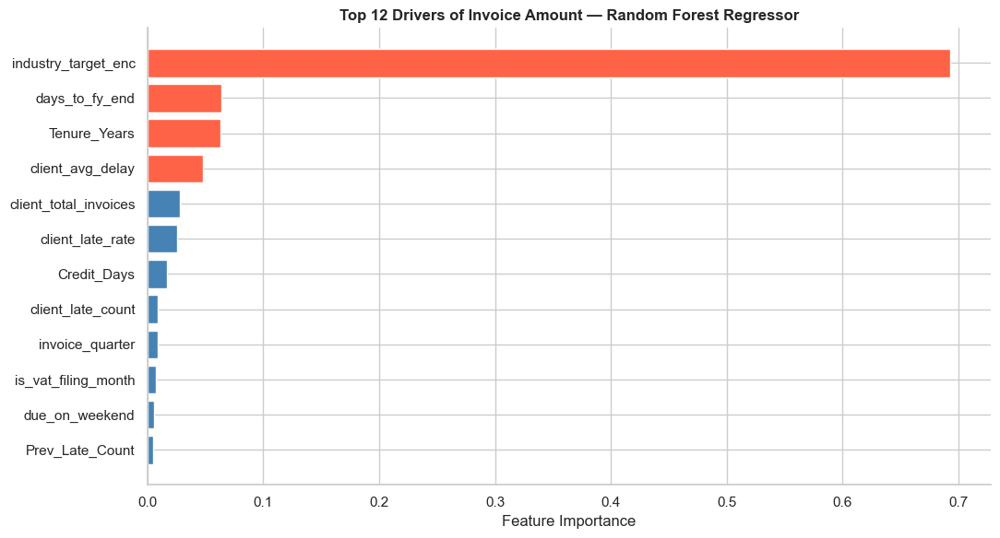
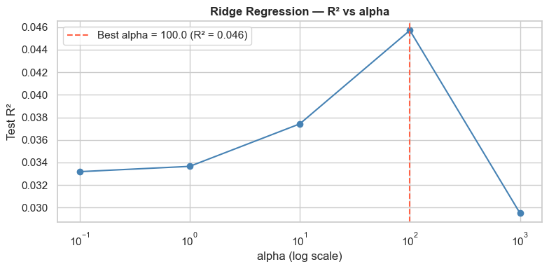
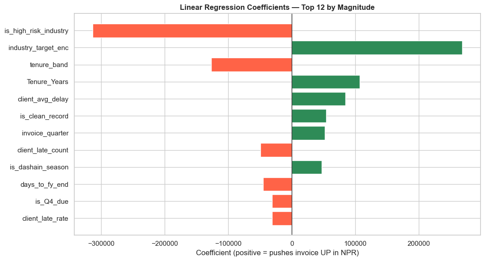

Module 09b: Regression Modelling for CA Professionals
Himalayan Advisory & Accounting Services Pvt. Ltd. — Kathmandu
Part 1: Why Does This Matter to You?
"Every quarter, the partner asks me how much we'll bill next month. I look at last quarter and guess. We've over-hired in slow months and turned away work in busy ones — all because of bad forecasts."
— Engagement Manager, Kathmandu CA firm
Classification models answered "will this happen?" (Yes/No). Regression models answer "how much?" — a continuous number you can plug straight into a budget, cash-flow forecast, or capacity plan.
For Himalayan Advisory, the partner now wants:
"For this new engagement — a Construction client in Bagmati, 3-year tenure, NPR 60-day credit terms — what invoice amount should I expect, so I can plan staffing and working capital?"
That is a regression problem: predict a continuous NPR amount, not a Yes/No label.
The Business Problem
Using the same 900-invoice ledger from Module 08, we will build a model that predicts Invoice_Amount (NPR) from client history, industry, tenure, and seasonality.
| Question | Model Type | Output |
|---|---|---|
| Will this client pay late? (Module 09) | Classification | Yes / No |
| How large will the next invoice be? | Regression | NPR 4,20,000 |
| What credit days should we offer a new client? | Regression | 30 / 45 / 60 days |
Why this matters: an invoice-amount forecast feeds directly into revenue projections, GST/VAT planning, and working-capital sizing.
Part 2: Fundamentals
What Linear Regression Actually Does
Linear regression fits a straight line (or hyperplane) through the data by minimising the sum of squared errors between predictions and actuals.
Invoice_Amount ≈ β₀ + β₁ · Tenure_Years
+ β₂ · Credit_Days
+ β₃ · is_high_risk_industry
+ …
Each β (beta) is a coefficient the model learns from history. Interpretation is direct: "each extra year of tenure adds NPR X to the expected invoice."
Evaluation Metrics — The CA Interpretation
Classification used Accuracy, Precision, Recall. Regression uses different metrics because there is no "right answer" — only "how close".
| Metric | Formula | CA Interpretation |
|---|---|---|
| MAE | mean(|y − ŷ|) | Average rupee error per invoice |
| RMSE | √mean((y − ŷ)²) | Penalises large errors more (NPR units) |
| R² | 1 − SSₛₑₛ/SSₜₒₜ | % of variance explained (0–1 ideally) |
| MAPE | mean(|y − ŷ| / y) | Average % error |
For a partner's budget: MAE in rupees is the most actionable — "on average, our forecast is off by NPR 80,000 per invoice."
Three Models We Will Compare
| Model | What It Does | When To Use |
|---|---|---|
| Linear Regression | Plain OLS — one coefficient per feature | Interpretable baseline |
| Ridge Regression | Linear + penalty on large coefficients | Many correlated features |
| Random Forest Regressor | Hundreds of decision trees, averaged | Non-linear & interactions |
Part 3: Hands-on — Build and Evaluate Three Regressors
Section 1: Setup and Data Loading
import pandas as pd
import numpy as np
import matplotlib.pyplot as plt
import seaborn as sns
from sklearn.model_selection import train_test_split
from sklearn.linear_model import LinearRegression, Ridge
from sklearn.ensemble import RandomForestRegressor
from sklearn.preprocessing import StandardScaler
from sklearn.metrics import mean_absolute_error, mean_squared_error, r2_score
import warnings
warnings.filterwarnings('ignore')
%matplotlib inline
plt.rcParams['figure.dpi'] = 100
sns.set_theme(style='whitegrid')
# Load engineered features from Module 08 — same dataset as Module 09
df = pd.read_csv('nepal_invoice_features.csv')
print(f'Loaded: {df.shape[0]} invoices, {df.shape[1]} columns')
print(f'Target stats — Invoice_Amount (NPR):')
print(df['Invoice_Amount'].describe().round(0).to_string())
Loaded: 900 invoices, 40 columns
Target stats — Invoice_Amount (NPR):
count 900.0
mean 801613.0
std 636376.0
min 36000.0
25% 334750.0
50% 616000.0
75% 1076500.0
max 2974000.0
Section 2: Prepare Features and Target
The target is Invoice_Amount. We must drop any feature derived from Invoice_Amount — otherwise the model would "cheat" (data leakage):
invoice_credit_ratio= Invoice_Amount / Credit_Daysamount_vs_industry_median,daily_obligation,is_high_utilisation,is_mega_invoiceclient_avg_invoice(computed using this invoice's amount)- Interaction terms like
risk_x_amount,utilisation_x_history
What remains is truly predictive: client characteristics, industry, seasonality, history.
# Features that do NOT leak Invoice_Amount
feature_cols = [
# Client history (counts and rates — no amount info)
'prev_late_rate', 'client_total_invoices', 'client_late_rate',
'client_late_count', 'client_avg_delay',
# Tenure & credit terms
'Tenure_Years', 'Credit_Days', 'Prev_Late_Count', 'tenure_band',
# Binary flags (not derived from Invoice_Amount)
'is_repeat_offender', 'is_clean_record',
'is_first_time_client', 'is_long_term_client', 'is_high_risk_industry',
'is_Q4_due', 'is_dashain_season', 'is_vat_filing_month',
# Seasonality / dates
'invoice_quarter', 'due_quarter', 'days_to_fy_end', 'due_on_weekend',
# Industry encoding (target-encoded on Is_Late — not on amount)
'industry_target_enc',
# Interaction (history-only)
'q4_x_late_history',
]
# Keep only columns that actually exist
feature_cols = [c for c in feature_cols if c in df.columns]
X = df[feature_cols].copy()
y = df['Invoice_Amount'].copy()
print(f'Feature matrix: {X.shape}')
print(f'Target — Invoice_Amount (NPR): mean = {y.mean():,.0f} median = {y.median():,.0f}')
print(f' min = {y.min():,.0f} max = {y.max():,.0f}')
# Quick visual of the target distribution
fig, ax = plt.subplots(figsize=(10, 4))
ax.hist(y, bins=40, color='steelblue', edgecolor='white')
ax.axvline(y.mean(), color='tomato', linestyle='--', label=f'Mean: NPR {y.mean():,.0f}')
ax.axvline(y.median(), color='seagreen', linestyle='--', label=f'Median: NPR {y.median():,.0f}')
ax.set_xlabel('Invoice Amount (NPR)')
ax.set_ylabel('Count')
ax.set_title('Distribution of Invoice_Amount — Regression Target', fontweight='bold')
ax.legend()
plt.tight_layout()
plt.show()
Feature matrix: (900, 23)
Target — Invoice_Amount (NPR): mean = 801,613 median = 616,000
min = 36,000 max = 2,974,000

# Train / Test split — 80/20
X_train, X_test, y_train, y_test = train_test_split(
X, y, test_size=0.20, random_state=42
)
# Fill any NaNs with column median (some history features can be NaN for first-time clients)
X_train = X_train.fillna(X_train.median(numeric_only=True))
X_test = X_test.fillna(X_train.median(numeric_only=True))
print(f'Training set: {X_train.shape[0]} invoices mean NPR {y_train.mean():,.0f}')
print(f'Test set: {X_test.shape[0]} invoices mean NPR {y_test.mean():,.0f}')
Training set: 720 invoices mean NPR 797,492
Test set: 180 invoices mean NPR 818,100
Section 3: Model 1 — Linear Regression (OLS Baseline)
The classical workhorse. Easy to interpret — each coefficient says how many NPR a one-unit change in that feature adds (or removes) from the predicted invoice amount.
# Scale features (good practice for linear models, especially Ridge later)
scaler = StandardScaler()
X_train_sc = scaler.fit_transform(X_train)
X_test_sc = scaler.transform(X_test)
# Fit Linear Regression
lr = LinearRegression()
lr.fit(X_train_sc, y_train)
y_pred_lr = lr.predict(X_test_sc)
# Metrics
mae_lr = mean_absolute_error(y_test, y_pred_lr)
rmse_lr = np.sqrt(mean_squared_error(y_test, y_pred_lr))
r2_lr = r2_score(y_test, y_pred_lr)
mape_lr = np.mean(np.abs((y_test - y_pred_lr) / y_test)) * 100
print('=== Linear Regression — Test Set Results ===')
print(f' MAE : NPR {mae_lr:,.0f} (typical error per invoice)')
print(f' RMSE : NPR {rmse_lr:,.0f} (penalises large misses)')
print(f' R² : {r2_lr:.4f} (1.0 = perfect, 0 = no better than mean)')
print(f' MAPE : {mape_lr:.1f}% (avg % error vs actual)')
=== Linear Regression — Test Set Results ===
MAE : NPR 484,264 (typical error per invoice)
RMSE : NPR 641,403 (penalises large misses)
R² : 0.0331 (1.0 = perfect, 0 = no better than mean)
MAPE : 127.1% (avg % error vs actual)
Section 4: Model 2 — Ridge Regression
Ridge is Linear Regression with a penalty on large coefficients. When features are correlated (e.g. client_total_invoices, client_late_count, client_avg_delay all move together), plain OLS can swing wildly. Ridge keeps coefficients stable.
ridge = Ridge(alpha=10.0, random_state=42)
ridge.fit(X_train_sc, y_train)
y_pred_ridge = ridge.predict(X_test_sc)
mae_ridge = mean_absolute_error(y_test, y_pred_ridge)
rmse_ridge = np.sqrt(mean_squared_error(y_test, y_pred_ridge))
r2_ridge = r2_score(y_test, y_pred_ridge)
mape_ridge = np.mean(np.abs((y_test - y_pred_ridge) / y_test)) * 100
print('=== Ridge Regression (alpha=10) — Test Set Results ===')
print(f' MAE : NPR {mae_ridge:,.0f}')
print(f' RMSE : NPR {rmse_ridge:,.0f}')
print(f' R² : {r2_ridge:.4f}')
print(f' MAPE : {mape_ridge:.1f}%')
=== Ridge Regression (alpha=10) — Test Set Results ===
MAE : NPR 484,213
RMSE : NPR 639,978
R² : 0.0374
MAPE : 127.8%
Section 5: Model 3 — Random Forest Regressor
Random Forest builds many decision trees and averages their numeric predictions. It captures non-linear effects (e.g. invoice amount might rise with tenure up to 5 years then plateau) and interactions (Dashain + Construction = unusually large invoices) without needing them hand-engineered.
rf = RandomForestRegressor(
n_estimators=300,
max_depth=10,
min_samples_leaf=5,
random_state=42,
n_jobs=-1
)
rf.fit(X_train, y_train) # Trees don't need scaling
y_pred_rf = rf.predict(X_test)
mae_rf = mean_absolute_error(y_test, y_pred_rf)
rmse_rf = np.sqrt(mean_squared_error(y_test, y_pred_rf))
r2_rf = r2_score(y_test, y_pred_rf)
mape_rf = np.mean(np.abs((y_test - y_pred_rf) / y_test)) * 100
print('=== Random Forest Regressor — Test Set Results ===')
print(f' MAE : NPR {mae_rf:,.0f}')
print(f' RMSE : NPR {rmse_rf:,.0f}')
print(f' R² : {r2_rf:.4f}')
print(f' MAPE : {mape_rf:.1f}%')
=== Random Forest Regressor — Test Set Results ===
MAE : NPR 358,855
RMSE : NPR 475,277
R² : 0.4691
MAPE : 79.0%
Section 6: Model Comparison — Side-by-Side
The partner doesn't care about algorithms — only which forecast is closer to reality.
results = pd.DataFrame({
'Model': ['Linear Regression', 'Ridge Regression', 'Random Forest'],
'MAE (NPR)': [mae_lr, mae_ridge, mae_rf],
'RMSE (NPR)': [rmse_lr, rmse_ridge, rmse_rf],
'R²': [r2_lr, r2_ridge, r2_rf],
'MAPE %': [mape_lr, mape_ridge, mape_rf],
}).round(2)
print('=== Model Comparison — Invoice Amount Forecasting ===')
print(results.to_string(index=False))
best_idx = results['MAE (NPR)'].idxmin()
print(f'\nBest by MAE: {results.loc[best_idx, "Model"]} '
f'(off by NPR {results.loc[best_idx, "MAE (NPR)"]:,.0f} per invoice on average)')
=== Model Comparison — Invoice Amount Forecasting ===
Model MAE (NPR) RMSE (NPR) R² MAPE %
Linear Regression 484264.40 641402.98 0.03 127.14
Ridge Regression 484213.08 639977.90 0.04 127.77
Random Forest 358855.20 475276.76 0.47 79.05
Best by MAE: Random Forest (off by NPR 358,855 per invoice on average)
fig, axes = plt.subplots(1, 3, figsize=(18, 5))
fig.suptitle('Regression Models — Predicted vs Actual (Test Set)\nHimalayan Advisory Invoice Forecasting',
fontsize=13, fontweight='bold')
predictions = [(y_pred_lr, 'Linear Regression', 'steelblue', mae_lr, r2_lr),
(y_pred_ridge, 'Ridge Regression', 'mediumorchid', mae_ridge, r2_ridge),
(y_pred_rf, 'Random Forest', 'tomato', mae_rf, r2_rf)]
lo, hi = y_test.min(), y_test.max()
for ax, (y_pred, name, color, mae, r2) in zip(axes, predictions):
ax.scatter(y_test, y_pred, alpha=0.5, color=color, edgecolor='white', s=40)
ax.plot([lo, hi], [lo, hi], 'k--', lw=1, label='Perfect prediction')
ax.set_xlabel('Actual Invoice Amount (NPR)')
ax.set_ylabel('Predicted Invoice Amount (NPR)')
ax.set_title(f'{name}\nMAE: NPR {mae:,.0f} R²: {r2:.3f}', fontweight='bold')
ax.legend(loc='upper left', fontsize=9)
plt.tight_layout()
plt.show()

Section 7: Residual Analysis — Where Does the Model Miss?
A residual is actual − predicted. A good model has residuals scattered randomly around zero — no pattern. A pattern in residuals means we're missing a feature.
# Use the best model (Random Forest by default — will work for any of the three)
residuals = y_test - y_pred_rf
fig, axes = plt.subplots(1, 2, figsize=(14, 5))
fig.suptitle('Random Forest — Residual Diagnostics', fontweight='bold', fontsize=13)
# Residuals vs predicted
axes[0].scatter(y_pred_rf, residuals, alpha=0.5, color='steelblue', edgecolor='white')
axes[0].axhline(0, color='tomato', lw=2)
axes[0].set_xlabel('Predicted Invoice Amount (NPR)')
axes[0].set_ylabel('Residual (Actual − Predicted)')
axes[0].set_title('Residuals vs Predicted', fontweight='bold')
# Residual distribution
axes[1].hist(residuals, bins=30, color='seagreen', edgecolor='white')
axes[1].axvline(0, color='tomato', lw=2)
axes[1].axvline(residuals.mean(), color='black', lw=1, linestyle='--',
label=f'Mean residual: NPR {residuals.mean():,.0f}')
axes[1].set_xlabel('Residual (NPR)')
axes[1].set_ylabel('Count')
axes[1].set_title('Residual Distribution', fontweight='bold')
axes[1].legend()
plt.tight_layout()
plt.show()
print(f'Residual stats (NPR):')
print(f' Mean: {residuals.mean():>12,.0f} (should be near 0 — no systematic bias)')
print(f' Std: {residuals.std():>12,.0f} (typical scatter)')
print(f' Worst over-forecast: {residuals.min():>12,.0f}')
print(f' Worst under-forecast: {residuals.max():>12,.0f}')

Residual stats (NPR):
Mean: 20,199 (should be near 0 — no systematic bias)
Std: 476,172 (typical scatter)
Worst over-forecast: -1,300,757
Worst under-forecast: 1,339,182
Section 8: What Drives Invoice Size?
Random Forest's feature importance answers the partner's real question: "What client characteristics make an invoice big?"
importance_df = pd.DataFrame({
'Feature': feature_cols,
'Importance': rf.feature_importances_
}).sort_values('Importance', ascending=False).head(12)
fig, ax = plt.subplots(figsize=(11, 6))
colors = ['tomato' if i < 4 else 'steelblue' for i in range(len(importance_df))]
ax.barh(importance_df['Feature'][::-1], importance_df['Importance'][::-1],
color=colors[::-1], edgecolor='white')
ax.set_xlabel('Feature Importance')
ax.set_title('Top 12 Drivers of Invoice Amount — Random Forest Regressor',
fontweight='bold')
ax.spines['top'].set_visible(False)
ax.spines['right'].set_visible(False)
plt.tight_layout()
plt.show()
print('Top 5 drivers of invoice amount:')
for _, row in importance_df.head(5).iterrows():
bar = '█' * int(row['Importance'] * 80)
print(f' {row["Feature"]:<28} {row["Importance"]:.4f} {bar}')

Top 5 drivers of invoice amount:
industry_target_enc 0.6934 ███████████████████████████████████████████████████████
days_to_fy_end 0.0640 █████
Tenure_Years 0.0630 █████
client_avg_delay 0.0483 ███
client_total_invoices 0.0279 ██
Section 9: Putting It To Work — Forecast a New Engagement
The partner walks in: "I'm pitching a Construction client, 3 years tenure, 60-day credit terms, never been late, invoice will be raised in Q4 during Dashain. What should I quote?"
# Build a single-row DataFrame mirroring our training features
new_engagement = pd.DataFrame([{
'prev_late_rate': 0.0, # never been late
'client_total_invoices': 4, # 4 prior invoices on file
'client_late_rate': 0.0,
'client_late_count': 0,
'client_avg_delay': 0.0,
'Tenure_Years': 3.0,
'Credit_Days': 60,
'Prev_Late_Count': 0,
'tenure_band': 2, # mid-tenure
'is_repeat_offender': 0,
'is_clean_record': 1,
'is_first_time_client': 0,
'is_long_term_client': 0,
'is_high_risk_industry': 1, # Construction = high-risk
'is_Q4_due': 1,
'is_dashain_season': 1,
'is_vat_filing_month': 0,
'invoice_quarter': 4,
'due_quarter': 4,
'days_to_fy_end': 45,
'due_on_weekend': 0,
'industry_target_enc': df.loc[df['Industry']=='Construction', 'industry_target_enc'].mean(),
'q4_x_late_history': 0.0,
}])
# Align column order to training
new_engagement = new_engagement[feature_cols]
# Predict with all three models
pred_lr_new = lr.predict(scaler.transform(new_engagement))[0]
pred_ridge_new = ridge.predict(scaler.transform(new_engagement))[0]
pred_rf_new = rf.predict(new_engagement)[0]
print('=== Forecast for New Construction Engagement ===')
print(f' Linear Regression : NPR {pred_lr_new:>10,.0f}')
print(f' Ridge Regression : NPR {pred_ridge_new:>10,.0f}')
print(f' Random Forest : NPR {pred_rf_new:>10,.0f}')
print(f'\n Recommendation to partner: quote ~NPR {pred_rf_new:,.0f} '
f'(± NPR {mae_rf:,.0f} typical error)')
=== Forecast for New Construction Engagement ===
Linear Regression : NPR 1,001,820
Ridge Regression : NPR 1,001,087
Random Forest : NPR 1,428,576
Recommendation to partner: quote ~NPR 1,428,576 (± NPR 358,855 typical error)
Part 4: Practice Exercises
Exercise 1 — Tune Ridge's Penalty
Ridge(alpha=...) controls how aggressively the model shrinks coefficients. Larger alpha = simpler model, less overfitting.
- Try
alphavalues:[0.1, 1, 10, 100, 1000] - For each, fit on training, predict on test, record
R²andMAE - Plot R² vs alpha (log scale on x-axis). Where does R² peak?
Exercise 2 — Linear Regression Coefficients
Build a coefficient table for the Linear Regression model:
- Pair each feature name with its coefficient (
lr.coef_) - Sort by absolute value descending
- Plot a horizontal bar chart: positive coefficients in green (push invoice up), negative in red (push down)
- Write 2 sentences interpreting the top positive and top negative coefficient for a partner
Exercise 3 — Industry-Level Invoice Forecast
Use the Random Forest to predict invoice amounts for all rows in df. Then:
- Compute predicted average invoice per
Industry - Compare to actual average invoice per
Industry - Which industry does the model over-forecast? Which does it under-forecast?
Solutions in cells below.
# SOLUTION — Exercise 1: Tune Ridge's alpha
alphas = [0.1, 1, 10, 100, 1000]
tuning = []
for a in alphas:
r = Ridge(alpha=a, random_state=42).fit(X_train_sc, y_train)
p = r.predict(X_test_sc)
tuning.append({'alpha': a,
'R2': r2_score(y_test, p),
'MAE': mean_absolute_error(y_test, p)})
tuning_df = pd.DataFrame(tuning)
print(tuning_df.round(4).to_string(index=False))
fig, ax = plt.subplots(figsize=(8, 4))
ax.plot(tuning_df['alpha'], tuning_df['R2'], marker='o', color='steelblue')
ax.set_xscale('log')
ax.set_xlabel('alpha (log scale)')
ax.set_ylabel('Test R²')
ax.set_title('Ridge Regression — R² vs alpha', fontweight='bold')
best = tuning_df.loc[tuning_df['R2'].idxmax()]
ax.axvline(best['alpha'], color='tomato', linestyle='--',
label=f'Best alpha = {best["alpha"]} (R² = {best["R2"]:.3f})')
ax.legend()
plt.tight_layout()
plt.show()
alpha R2 MAE
0.1 0.0332 484260.2193
1.0 0.0337 484220.6661
10.0 0.0374 484213.0795
100.0 0.0457 485636.2338
1000.0 0.0295 487608.3212

# SOLUTION — Exercise 2: Linear Regression coefficients
coef_df = pd.DataFrame({
'Feature': feature_cols,
'Coefficient': lr.coef_
}).sort_values('Coefficient', key=abs, ascending=False).head(12)
fig, ax = plt.subplots(figsize=(11, 6))
colors = ['seagreen' if c > 0 else 'tomato' for c in coef_df['Coefficient'][::-1]]
ax.barh(coef_df['Feature'][::-1], coef_df['Coefficient'][::-1],
color=colors, edgecolor='white')
ax.axvline(0, color='black', linewidth=0.8)
ax.set_xlabel('Coefficient (positive = pushes invoice UP in NPR)')
ax.set_title('Linear Regression Coefficients — Top 12 by Magnitude',
fontweight='bold')
plt.tight_layout()
plt.show()
top_pos = coef_df[coef_df['Coefficient'] > 0].iloc[0]
top_neg = coef_df[coef_df['Coefficient'] < 0].iloc[0]
print(f'Top upward driver : {top_pos["Feature"]:<28} (+{top_pos["Coefficient"]:,.0f} NPR per std)')
print(f'Top downward driver: {top_neg["Feature"]:<28} ({top_neg["Coefficient"]:,.0f} NPR per std)')

Top upward driver : industry_target_enc (+267,978 NPR per std)
Top downward driver: is_high_risk_industry (-313,434 NPR per std)
# SOLUTION — Exercise 3: Industry-level forecast vs actual
X_all = df[feature_cols].fillna(df[feature_cols].median(numeric_only=True))
df_pred = df.copy()
df_pred['Predicted_Invoice'] = rf.predict(X_all)
industry_view = df_pred.groupby('Industry').agg(
Invoices=('Invoice_ID', 'count'),
Actual_Avg=('Invoice_Amount', 'mean'),
Predicted_Avg=('Predicted_Invoice', 'mean'),
).round(0)
industry_view['Gap_NPR'] = (industry_view['Predicted_Avg'] - industry_view['Actual_Avg']).round(0)
industry_view['Gap_%'] = (industry_view['Gap_NPR'] / industry_view['Actual_Avg'] * 100).round(1)
industry_view = industry_view.sort_values('Gap_NPR', ascending=False)
print('=== Industry-Level Forecast vs Actual ===')
print(industry_view.to_string())
print()
print(f'Most over-forecast : {industry_view.index[0]} '
f'(model predicts NPR {industry_view["Gap_NPR"].iloc[0]:,.0f} too high)')
print(f'Most under-forecast: {industry_view.index[-1]} '
f'(model predicts NPR {abs(industry_view["Gap_NPR"].iloc[-1]):,.0f} too low)')
=== Industry-Level Forecast vs Actual ===
Invoices Actual_Avg Predicted_Avg Gap_NPR Gap_%
Industry
Construction 107 1355579.0 1367999.0 12420.0 0.9
Tourism & Hotels 108 314574.0 322617.0 8043.0 2.6
Agriculture 47 236809.0 244210.0 7401.0 3.1
Banking & Finance 75 486587.0 488892.0 2305.0 0.5
Trading & Import 213 682465.0 679801.0 -2664.0 -0.4
Services & IT 86 390093.0 377747.0 -12346.0 -3.2
Hydropower 120 1702525.0 1685861.0 -16664.0 -1.0
Manufacturing 144 774938.0 755498.0 -19440.0 -2.5
Most over-forecast : Construction (model predicts NPR 12,420 too high)
Most under-forecast: Manufacturing (model predicts NPR 19,440 too low)
Wrap-up
You now have both halves of supervised learning for CA work:
| Module | Predicts | Output | Useful For |
|---|---|---|---|
| 09 — Classification | Late or Not | Yes/No + probability | Credit risk, collections priority |
| 09b — Regression (this one) | Invoice amount | NPR value | Revenue forecasting, capacity planning |
Same data. Same workflow. Different target — different metric. That is the punchline of supervised learning.